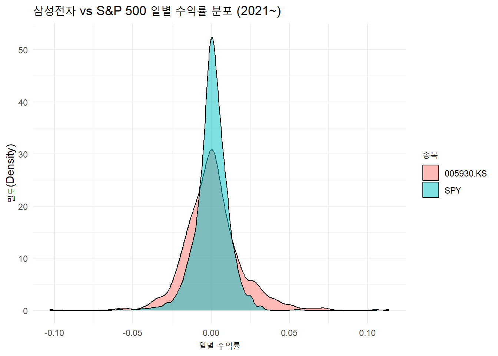

knitr::opts_chunk$set(
echo = TRUE,
message = FALSE,
warning = FALSE)Tidying, Visualising and Summarising Data - Tasks
Task (Optional): 주가 데이터 분석
tidyquant를 이용하여 한국의 대표 주식인 삼성전자(“005930.KS”)와 미국의 시장 지수인 S&P500 ETF(“SPY”)의 2021년 1월 1일 이후 주가 데이터를 다운로드하시오. (tq_get에 티커를 벡터c()형태로 입력)group_by()와mutate(),lag()함수를 사용하여 두 종목의 일별 수익률(daily_return)을 각각 계산하고drop_na()로 결측치를 제거하시오.
# 필수 패키지 로드
library(tidyquant)
library(tidyverse)
# 1. 삼성전자와 S&P 500 ETF(SPY) 데이터 다운로드
tickers <- c("005930.KS", "SPY")
stock_data <- tq_get(tickers, from = "2021-01-01")
# 2. 일별 수익률 계산 및 결측치 제거
stock_returns <- stock_data %>%
group_by(symbol) %>% # 종목별로 그룹화
arrange(date) %>% # 날짜 오름차순 정렬
mutate(daily_return = adjusted / lag(adjusted) - 1) %>% # 수익률 계산
drop_na(daily_return) # 첫 날의 NA 값 제거
# 결과 확인
head(stock_returns)# A tibble: 6 × 9
# Groups: symbol [2]
symbol date open high low close volume adjusted daily_return
<chr> <date> <dbl> <dbl> <dbl> <dbl> <dbl> <dbl> <dbl>
1 005930.KS 2021-01-05 81600 83900 81600 83900 3.53e7 75474. 0.0108
2 SPY 2021-01-05 368. 372. 368. 371. 6.64e7 347. 0.00689
3 005930.KS 2021-01-06 83300 84500 82100 82200 4.21e7 73945. -0.0203
4 SPY 2021-01-06 370. 377. 369. 374. 1.08e8 349. 0.00598
5 005930.KS 2021-01-07 82800 84200 82700 82900 3.26e7 74574. 0.00852
6 SPY 2021-01-07 376. 380. 376. 379. 6.88e7 354. 0.0149 ggplot2를 사용하여 두 종목의 일별 수익률 분포를 비교하는 밀도 그래프(geom_density)를 겹쳐서(alpha 값 조정) 그리시오.
# 3. 밀도 그래프 그리기 (alpha로 투명도를 주어 겹치는 부분 확인)
ggplot(stock_returns, aes(x = daily_return, fill = symbol)) +
geom_density(alpha = 0.5) +
labs(title = "삼성전자 vs S&P 500 일별 수익률 분포 (2021~)",
x = "일별 수익률",
y = "밀도(Density)",
fill = "종목") +
theme_minimal()
summarise()를 활용하여 두 종목 각각의 일평균 수익률(mean)과 변동성(sd)을 계산하시오.
# 4. summarise()를 활용한 요약 통계 계산
summary_stats <- stock_returns %>%
summarise(
mean_return = mean(daily_return),
sd_return = sd(daily_return) # 금융에서는 이것이 일간 '변동성(리스크)'을 의미합니다.
)
print(summary_stats)# A tibble: 2 × 3
symbol mean_return sd_return
<chr> <dbl> <dbl>
1 005930.KS 0.000894 0.0179
2 SPY 0.000596 0.0107- 두 종목의 수익률 간 상관계수(
cor)를 계산하시오. (상관관계를 구하려면 두 수익률을 가로(열)로 나란히 배치해야 하는데, 한국과 미국의 휴장일이 달라 데이터의 길이가 어긋나는 현상이 발생하기 때문에 날짜를 기준으로 데이터를 맞추는 과정(pivot_wider)이 필수적.)
# 5. 넓은 형태(Wide format)로 변환하여 상관계수 계산
returns_wide <- stock_returns %>%
select(date, symbol, daily_return) %>%
pivot_wider(names_from = symbol, values_from = daily_return) %>%
drop_na() # 어느 한 국가라도 휴장이어서 NA가 된 날짜는 제외
# 상관계수 계산
correlation <- cor(returns_wide$`005930.KS`, returns_wide$SPY)
print(correlation)[1] 0.06813916(참고: 티커명에 숫자가 포함되어 열 이름으로 바뀔 경우, R에서는 역따옴표()로 감싸주어야 변수명으로 정상 인식됨. 예시에서는005930.KS가005930.KS로 열 이름이 되었기 때문에, 상관계수 계산 시returns_wide$`005930.KS``와 같이 역따옴표로 감싸주어야 함.)